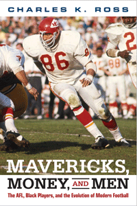

<body bgcolor="#FFFFFF" text="#000000" link="#0000FF" vlink="#CC0000" alink="#CC0000"><center><hr width="350" size="1" align="center" noshade><p>
<i>Examining the black player experience in the American Football League</i>
<br><hr width="350" size="1" align="center" noshade><p><a href="https://cdcshoppingcart.uchicago.edu/Cart/ChicagoBook.aspx?ISBN=&&PRESS=temple" target="_top">Buy this book!</a> | <a href="https://cdcshoppingcart.uchicago.edu/Cart/Cart.aspx?PRESS=temple" target="_top">View Cart</a> | <a href="https://cdcshoppingcart.uchicago.edu/Cart/Cart.aspx?PRESS=temple" target="_top">Check Out</a></p><p></p></center><!--none//--><h1>Mavericks, Money, and Men</h1>
<H2>The AFL, Black Players, and the Evolution of Modern Football</H2>
<h3>Charles K. Ross</h3>
paper: $19.95, May 16<BR>EAN:&nbsp;978-1-4399-1307-9<BR><font color=#990033>Not Yet Published Preorder</FONT><font size=-7><br>&nbsp;</font></p><p class="info">cloth: $84.50, <BR>EAN:&nbsp;978-1-4399-1306-2<BR><font color=#990033>Not Yet Published Preorder</FONT><font size=-7><br>&nbsp;</font></p><p class="info">e-book: $19.95, <BR>EAN:&nbsp;978-1-4399-1308-6<BR><font color=#990033>Not Yet Published Preorder</FONT><font size=-7><br>&nbsp;</font></p></p></td></tr></table>
<BR> <p class="info">212 pp<BR> 6 x 9<BR> 8&nbsp;color&nbsp;illustrations<BR></P> <p class="info"><font size=-7>&nbsp;</font></p><p class="info">
</P><BLOCKQUOTE></BLOCKQUOTE>
<p>
The American Football League, established in 1960, was innovative both in its commitment to finding talented, overlooked players—particularly those who played for historically black colleges and universities—and in the decision by team owners to share television revenues. <br>
<p>In <i>Mavericks, Money and Men, </i>football historian Charles Ross chronicles the AFL’s key events, including Buck Buchanan becoming the first overall draft pick in 1963, and the 1965 boycott led by black players who refused to play in the AFL-All Star game after experiencing blatant racism. He also recounts how the success of the AFL forced a merger with the NFL in 1969, which arguably facilitated the evolution of modern professional football.<br>
<p>Ross shows how the league, originally created as a challenge to the dominance of the NFL, pressured for and ultimately accelerated the racial integration of pro football and also allowed the sport to adapt to how African Americans were themselves changing the game.
<br>
<P CLASS="top"><A HREF="#top">BACK TO TOP</A></P>&nbsp;
<BR>&nbsp;
&nbsp;<P>
</P><BR>&nbsp;
<H2>About the Author(s)</H2><p>
<b>Charles K. Ross</b> is the Chair of the African American Studies Program and Associate Professor of African American Studies and History at the University of Mississippi. He is the author of <i>Outside the Lines: African Americans and the Integration of the National Football League</i> and the editor of <i>Race and Sport: The Struggle for Equality On and Off the Field. </i>
<br>
<P CLASS="top"><A HREF="#top">BACK TO TOP</A></P>
<p><h2>Subject Categories</h2><A HREF="/tempress/sports.html" TARGET="_top">Sports</a><BR><A HREF="/tempress/african.html" TARGET="_top">African American Studies</a><BR><A HREF="/tempress/american.html" TARGET="_top">American Studies</a>
</p>
<P><I><a href="http://www.temple.edu/tempress/sporting.html" onMouseOver="window.status='Click for other books in this series!'; return true;" onMouseOut="window.status="; return true;" target="_top”><p>
Sporting
<br>
</p><p>
As an international cultural activity for athleticism, spectatorship, and global cultural exchange, sport is unmatched by any other force on earth. And yet it remains a consistently understudied dimension of history and cultural studies. <i>Sporting</i>, edited by Amy Bass, aims to contribute to the study of sport by publishing works by people across a range of disciplines, by professional sportswriters, and by athletes to add substance to our still emerging notion of globalization.
<br />
<br></p>
<p align="center"><a href="https://cdcshoppingcart.uchicago.edu/Cart/ChicagoBook.aspx?ISBN=&&PRESS=temple" target="_top">Buy this book!</a> | <a href="https://cdcshoppingcart.uchicago.edu/Cart/Cart.aspx?PRESS=temple" target="_top">View Cart</a> | <a href="https://cdcshoppingcart.uchicago.edu/Cart/Cart.aspx?PRESS=temple" target="_top">Check Out</a></p><p><font face="Arial" size="1"><a href="copyright.html" onMouseOver="window.status='Web Copyright Policy';return true;" onMouseOut="window.status=''" title="Web Copyright Policy">&copy;</a> <a href="http://www.temple.edu" target="new" onMouseOver="window.status='Link to Temple University home page';return true;" onMouseOut="window.status=''" title="Link to Temple University home page">Temple University</a>. All Rights Reserved. http://www.temple.edu/tempress/titles/2383_reg.html</font></p>